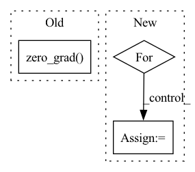

Pattern ID :28247
Before Change
a_dist.log_prob(a_dist.sample()).sum(-1, keepdim=True).clamp(-100.0, 100.0)
)
alpha_loss = -(log_alpha * (logp_a + target_entropy).detach()).mean()
optimizer.zero_grad()
alpha_loss.backward()
optimizer.step()
logs["losses/alpha_loss"] = alpha_loss.item()
logs["alpha"] = log_alpha.exp().item()After Change
with torch.no_grad():
s_rep = agent.encoder(o)
for i in range(agent.ensemble_size):
with torch.no_grad():
a_dist = agent.actors[i](s_rep)
if discrete:
logp_a = (a_dist.probs * torch.log_softmax(a_dist.logits, dim=1)).sum(-1)
else:In pattern: SUPERPATTERN
Frequency: 4
Non-data size: 3
Instances Fragment ID: 83411853
Project Name: jakegrigsby/super_sac
Commit Name: 819313070dbb7c72886cafb948c401c78eb03861
Time: 2021-10-12
Author: jcg6dn@virginia.edu
File Name: uafbc/learning.py
M Class Name: AnonimousClass
N Class Name: AnonimousClass
M Method Name: alpha_update(9)
N Method Name: alpha_update(9)
M Parent Class:
N Parent Class:
M File Name: uafbc/learning.py
N File Name: uafbc/learning.py
M Start Line: 185
M End Line: 198
N Start Line: 191
N End Line: 211
Before Change
a_dist.log_prob(a_dist.sample()).sum(-1, keepdim=True).clamp(-100.0, 100.0)
)
alpha_loss = -(log_alpha * (logp_a + target_entropy).detach()).mean()
optimizer.zero_grad()
alpha_loss.backward()
optimizer.step()
logs["losses/alpha_loss"] = alpha_loss.item()
logs["alpha"] = log_alpha.exp().item()After Change
with torch.no_grad():
s_rep = agent.encoder(o)
for i in range(agent.ensemble_size):
with torch.no_grad():
a_dist = agent.actors[i](s_rep)
if discrete:
logp_a = (a_dist.probs * torch.log_softmax(a_dist.logits, dim=1)).sum(-1)
else:
logp_a = (
a_dist.log_prob(a_dist.sample())
.sum(-1, keepdim=True)
.clamp(-100.0, 100.0)
)
alpha_loss = -(log_alphas[i] * (logp_a + target_entropy).detach()).mean()
optimizers[i].zero_grad()
alpha_loss.backward()
optimizers[i].step()
logs[f"losses/alpha_loss_{i}"] = alpha_loss.item()
logs[f"alphas/alpha_{i}"] = log_alphas[i].exp().item()
return logs
Fragment ID: 83411854
Project Name: jakegrigsby/super_sac
Commit Name: 819313070dbb7c72886cafb948c401c78eb03861
Time: 2021-10-12
Author: jcg6dn@virginia.edu
File Name: uafbc/learning.py
M Class Name: AnonimousClass
N Class Name: AnonimousClass
M Method Name: alpha_update(9)
N Method Name: alpha_update(9)
M Parent Class:
N Parent Class:
M File Name: uafbc/learning.py
N File Name: uafbc/learning.py
M Start Line: 185
M End Line: 198
N Start Line: 191
N End Line: 211
Before Change
hh_list.append(hh)
preds = torch.stack(output_list, dim=1)
loss = criterion(preds, targets)
optimizer.zero_grad()
loss.backward()
optimizer.step()
p_bar.set_description(f"Loss: {loss.item():.4f}")
return torch.squeeze(preds)After Change
instantaneous_eligibility_trace = torch.zeros_like(param)
grad_outputs = torch.eye(out.shape[-1], device=targets.device)
for g_idx in range(grad_outputs.shape[0]):
param.grad.zero_()
instantaneous_eligibility_trace[g_idx] = torch.autograd.grad(out[:, g_idx], param, retain_graph=True)[0][g_idx]
eligibility_trace.append(instantaneous_eligibility_trace)
preds = torch.stack(output_list, dim=1)
mean_error = targets - preds Fragment ID: 83411855
Project Name: neurotorch/neurotorch
Commit Name: 4028f8f7fcb44b43d6235c1d12c734f809b1e629
Time: 2022-11-28
Author: 50332514+JeremieGince@users.noreply.github.com
File Name: src/neurotorch/learning_algorithms/debug_e_prop.py
M Class Name: AnonimousClass
N Class Name: AnonimousClass
M Method Name: dummy_train(1)
N Method Name: dummy_train(1)
M Parent Class:
N Parent Class:
M File Name: src/neurotorch/learning_algorithms/debug_e_prop.py
N File Name: src/neurotorch/learning_algorithms/debug_e_prop.py
M Start Line: 51
M End Line: 64
N Start Line: 45
N End Line: 76
Before Change
def step_on_computed_grads(self, old_lrs=None):
self.optimizer.step()
self.optimizer.zero_grad()
// Restore old LRs, to avoid messing up scheduler.
if old_lrs:
pgs = self.optimizer.param_groupsAfter Change
self.optimizer.step()
// self.optimizer.zero_grad()
for pg in self.optimizer.param_groups:
for p in pg["params"]:
p.grad = None
// Restore old LRs, to avoid messing up scheduler.
if old_lrs: Fragment ID: 83411856
Project Name: saareliad/ftpipe
Commit Name: 82db7dac9576244e71fce2b614f8191a9cc59616
Time: 2020-09-03
Author: saareliad@campus.technion.ac.il
File Name: pipeline/training/interface.py
M Class Name: GradNormStepper
N Class Name: GradNormStepper
M Method Name: step_on_computed_grads(2)
N Method Name: step_on_computed_grads(2)
M Parent Class:
N Parent Class:
M File Name: pipeline/training/interface.py
N File Name: pipeline/training/interface.py
M Start Line: 122
M End Line: 122
N Start Line: 126
N End Line: 131
Before Change
def train():
model.train()
optimizer.zero_grad()
for batch in train_loader:
batch.to(device)
emb = model(batch)
loss = F.nll_loss(emb[batch.node_label_index],After Change
model = model_cls(num_node_features, args.hidden_dim, num_classes, args).to(device)
opt = build_optimizer(args, model.parameters())
for epoch in range(args.epochs):
total_loss = 0
model.train()
for batch in train_loader:
batch.to(device)
opt.zero_grad()
pred = model(batch)
label = batch.node_label
loss = model.loss(pred[batch.node_label_index], label[batch.node_label_index])
loss.backward()
opt.step() Fragment ID: 83411857
Project Name: snap-stanford/deepsnap
Commit Name: 7bd48169aea6ac9922ecbb0a7b1fa88b3809586e
Time: 2020-10-26
Author: youjiaxuan@gmail.com
File Name: examples/node_classification_cora.py
M Class Name: AnonimousClass
N Class Name: AnonimousClass
M Method Name: train(7)
N Method Name: train(0)
M Parent Class:
N Parent Class:
M File Name: examples/node_classification_cora.py
N File Name: examples/node_classification_cora.py
M Start Line: 76
M End Line: 86
N Start Line: 120
N End Line: 145